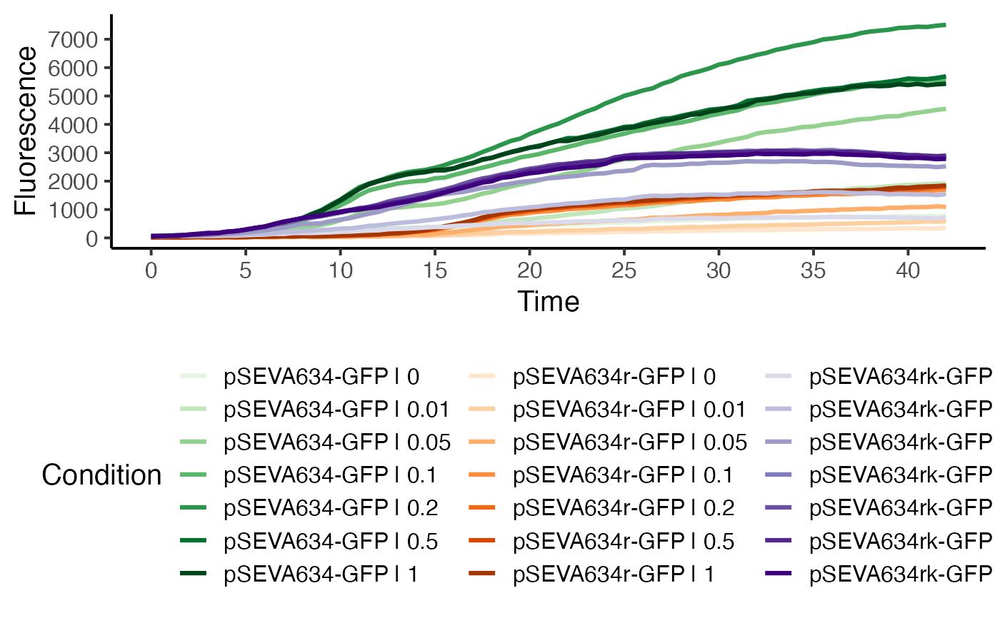

Run a complete fluorescence curve analysis and dose-reponse analysis workflow.
Source:R/fluorescence_workflows.R
fl.workflow.Rdfl.workflow runs fl.control to create a fl.control object and then performs all computational fitting operations based on the user input. Finally, if desired, a final report is created in PDF or HTML format that summarizes all results obtained.
Usage
fl.workflow(
grodata = NULL,
time = NULL,
growth = NULL,
fl_data = NULL,
ec50 = TRUE,
mean.grp = NA,
mean.conc = NA,
fit.opt = c("l", "s"),
x_type = c("growth", "time"),
norm_fl = TRUE,
t0 = 0,
tmax = NA,
min.growth = 0,
max.growth = NA,
log.x.lin = FALSE,
log.x.spline = FALSE,
log.y.lin = FALSE,
log.y.spline = FALSE,
lin.h = NULL,
lin.R2 = 0.97,
lin.RSD = 0.07,
lin.dY = 0.05,
biphasic = FALSE,
interactive = FALSE,
dr.parameter = "max_slope.spline",
dr.method = c("model", "spline"),
dr.have.atleast = 5,
smooth.dr = NULL,
log.x.dr = FALSE,
log.y.dr = FALSE,
nboot.dr = 0,
nboot.fl = 0,
smooth.fl = 0.75,
growth.thresh = 1.5,
suppress.messages = FALSE,
neg.nan.act = FALSE,
clean.bootstrap = TRUE,
report = NULL,
out.dir = NULL,
out.nm = NULL,
export.fig = FALSE,
export.res = FALSE,
parallelize = TRUE,
...
)Arguments
- grodata
A
grodataobject created withread_dataorparse_data, containing fluorescence data and data for the independent variable (i.e., time or growth).- time
(optional) A matrix containing time values for each sample (if a
fl_datadataframe is provided as separate argument).- growth
(optional) A dataframe containing growth data (if a
fl_datamatrix is provided as separate argument).- fl_data
(optional) A dataframe containing fluorescence data (if a
timematrix orgrowthdataframe is provided as separate argument).- ec50
(Logical) Perform dose-response analysis (
TRUE) or not (FALSE).- mean.grp
(
"all", a string vector, or a list of string vectors) Define groups to combine into common plots in the final report based on sample identifiers (ifreport == TRUE). Partial matches with sample/group names are accepted. Note: The maximum number of sample groups (with unique condition/concentration indicators) is 50. If you have more than 50 groups, option"all"will produce the error! Insufficient values in manual scale. [Number] needed but only 50 provided.- mean.conc
(A numeric vector, or a list of numeric vectors) Define concentrations to combine into common plots in the final report (if
report == TRUE).- fit.opt
(Character or character vector) Indicates whether the program should perform a linear regression (
"l"), model fit ("m"), spline fit ("s"), or all ("a"). Combinations can be freely chosen by providing a character vector, e.g.fit.opt = c("l", "s")Default:fit.opt = c("l", "s").- x_type
(Character) Which data type shall be used as independent variable? Options are
'growth'and'time'.- norm_fl
(Logical) use normalized (to growth) fluorescence data in fits. Has an effect only when
x_type = 'time'- t0
(Numeric) Minimum time value considered for linear and spline fits (if
x_type = 'time').- tmax
(Numeric) Maximum time value considered for linear and spline fits (if
x_type = 'time')..- min.growth
(Numeric) Indicate whether only values above a certain threshold should be considered for linear regressions or spline fits (if
x_type = 'growth').- max.growth
(Numeric) Indicate whether only growth values below a certain threshold should be considered for linear regressions or spline fits (if
x_type = 'growth').- log.x.lin
(Logical) Indicates whether ln(x+1) should be applied to the independent variable for linear fits. Default:
FALSE.- log.x.spline
(Logical) Indicates whether ln(x+1) should be applied to the independent variable for spline fits. Default:
FALSE.- log.y.lin
(Logical) Indicates whether ln(y/y0) should be applied to the fluorescence data for linear fits. Default:
FALSE- log.y.spline
(Logical) Indicates whether ln(y/y0) should be applied to the fluorescence data for spline fits. Default:
FALSE- lin.h
(Numeric) Manually define the size of the sliding window used in
flFitLinear. IfNULL, h is calculated for each samples based on the number of measurements in the fluorescence increase phase of the plot.- lin.R2
(Numeric) R2 threshold for
flFitLinear.- lin.RSD
(Numeric) Relative standard deviation (RSD) threshold for the calculated slope in
flFitLinear.- lin.dY
(Numeric) Threshold for the minimum fraction of growth increase a linear regression window should cover. Default: 0.05 (5%).
- biphasic
(Logical) Shall
flFitLinearandflFitSplinetry to extract fluorescence parameters for two different phases (as observed with, e.g., regulator-promoter systems with varying response in different growth stages) (TRUE) or not (FALSE)?- interactive
(Logical) Controls whether the fit for each sample and method is controlled manually by the user. If
TRUE, each fit is visualized in the Plots pane and the user can adjust fitting parameters and confirm the reliability of each fit per sample. Default:TRUE.- dr.parameter
(Character or numeric) The response parameter in the output table to be used for creating a dose response curve. See
fl.drFitfor further details. Default:"max_slope.spline", which represents the maximum slope of the spline fit Typical options include:"max_slope.linfit","dY.linfit","max_slope.spline", and"dY.spline".- dr.method
(Character) Perform either a smooth spline fit on response parameter vs. concentration data (
"spline") or fit a biosensor response model (proposed by Meyer et al., 2019).- dr.have.atleast
(Numeric) Minimum number of different values for the response parameter one should have for estimating a dose response curve. Note: All fit procedures require at least six unique values. Default:
6.- smooth.dr
(Numeric) Smoothing parameter used in the spline fit by smooth.spline during dose response curve estimation. Usually (not necessesary) in (0; 1]. See
smooth.splinefor further details. Default:NULL.- log.x.dr
(Logical) Indicates whether
ln(x+1)should be applied to the concentration data of the dose response curves. Default:FALSE.- log.y.dr
(Logical) Indicates whether
ln(y+1)should be applied to the response data of the dose response curves. Default:FALSE.- nboot.dr
(Numeric) Defines the number of bootstrap samples for EC50 estimation. Use
nboot.dr = 0to disable bootstrapping. Default:0.- nboot.fl
(Numeric) Number of bootstrap samples used for nonparametric curve fitting with
flBootSpline. Usenboot.fl = 0to disable the bootstrap. Default:0- smooth.fl
(Numeric) Parameter describing the smoothness of the spline fit; usually (not necessary) within (0;1].
smooth.gc=NULLcauses the program to query an optimal value via cross validation techniques. Especially for datasets with few data points the optionNULLmight cause a too small smoothing parameter. This can result a too tight fit that is susceptible to measurement errors (thus overestimating slopes) or produce an error insmooth.splineor lead to overfitting. The usage of a fixed value is recommended for reproducible results across samples. Seesmooth.splinefor further details. Default:0.55- growth.thresh
(Numeric) Define a threshold for growth. Only if any growth value in a sample is greater than
growth.thresh(default: 1.5) times the start growth, further computations are performed. Else, a message is returned.- suppress.messages
(Logical) Indicates whether messages (information about current fluorescence curve, EC50 values etc.) should be displayed (
FALSE) or not (TRUE). This option is meant to speed up the high-throughput processing data. Note: warnings are still displayed. Default:FALSE.- neg.nan.act
(Logical) Indicates whether the program should stop when negative fluorescence values or NA values appear (
TRUE). Otherwise, the program removes these values silently (FALSE). Improper values may be caused by incorrect data or input errors. Default:FALSE.- clean.bootstrap
(Logical) Determines if negative values which occur during bootstrap should be removed (
TRUE) or kept (FALSE). Note: Infinite values are always removed. Default:TRUE.- report
(Character or NULL) Create a PDF (
'pdf') and/or HTML ('html') report after running all computations. DefineNULLif no report should be created. Default: (c('pdf', 'html'))- out.dir
Character or
NULLDefine the name of a folder in which all result files (tables and reports) are stored. IfNULL, the folder will be named with a combination of "FluorescenceResults_" and the current date and time.- out.nm
Character or
NULLDefine the name of the report files. IfNULL, the files will be named with a combination of "FluorescenceReport_" and the current date and time.- export.fig
(Logical) Export all figures created in the report as separate PNG and PDF files (
TRUE) or not (FALSE). Only effective ifreport = TRUE.- export.res
(Logical) Create tab-separated TXT files containing calculated parameters and dose-response analysis results as well as an .RData file for the resulting
flFitResobject.- parallelize
Run linear fits and bootstrapping operations in parallel using all but one available processor cores
- ...
Further arguments passed to the shiny app.
Value
A flFitRes object that contains all computation results, compatible with various plotting functions of the QurvE package and with fl.report.
- time
Raw time matrix passed to the function as
time(if nogrofitobject is provided. Else, extracted fromgrofit).- data
Raw data dataframe passed to the function as
grodata.- flFit
flFitobject created with the call offlFiton fluorescence data.- drFit
drFitordrFitflobject created with the call ofgrowth.drFitorfl.drFitfor fluorescence data (based on thedr.methodargument incontrol; seefl.control).- expdesign
Experimental design table inherited from
grodataor created from the identifier columns (columns 1-3) indata.- control
Object of class
fl.controlcreated with the call offl.control.
Examples
# load example dataset
input <- read_data(data.growth = system.file("lac_promoters.xlsx", package = "QurvE"),
data.fl = system.file("lac_promoters.xlsx", package = "QurvE"),
sheet.growth = 1,
sheet.fl = 2 )
#> Sample data are stored in columns. If they are stored in row format, please run read_data() with data.format = 'row'.
# Run workflow
res <- fl.workflow(grodata = input, ec50 = FALSE, fit.opt = "s",
x_type = "time", norm_fl = TRUE,
dr.parameter = "max_slope.spline",
suppress.messages = TRUE,
parallelize = FALSE)
plot(res, data.type = "raw", legend.ncol = 3, basesize = 15)
#> Warning: Derivatives cannot be calculated for 'raw' or 'norm.fl' data. Only the fluorescence values will be shown.
